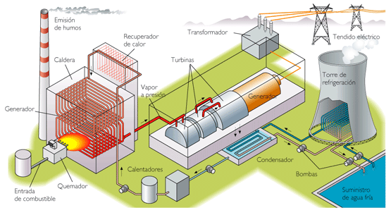

|
Las
centrales térmicas convencionales, también llamadas termoeléctricas
convencionales, utilizan combustibles fósiles (gas natural, carbón o
fueloil) para generar energía eléctrica mediante un ciclo termodinámico
de agua-vapor.
En estas centrales , el combustible se quema en una caldera provocando
la energía térmica que se utiliza para calentar agua, que se transforma
en vapor a una presión muy elevada. Después, ese vapor hace girar una
gran turbina, convirtiendo la energía calorífica en energía mecánica
que, posteriormente, se transforma en energía eléctrica en el
alternador. Finalmente, el vapor que sale de la turbina se envía a un
condensador para convertirlo en agua y devolverlo a la caldera para
empezar un nuevo ciclo de producción de vapor.
|
Ventajas de la energía termoeléctrica
|
- Son las centrales más baratas de construir
(teniendo en cuenta el precio por megavatio instalado), especialmente
las de carbón, debido a la simplicidad (comparativamente hablando) de
construcción y la energía generada de forma masiva.
- Las centrales de ciclo combinado de gas natural
son mucho más eficientes (alcanzan el 50 %) que una termoeléctrica
convencional, aumentando la energía eléctrica generada (y por tanto,
las ganancias) con la misma cantidad de combustible, y rebajando las
emisiones citadas más arriba en un 20 %, quedando así en 0,54 kg de
CO2, por kWh producido.
- La gran cantidad de energía térmica generada (en
las más eficientes, al menos el 50 % del total de la energía consumida)
podría emplearse como energía residual para calefactar (o incluso
refrigerar) edificios mediante una red de distribución
|
|
Desventajas de la energía termoeléctrica
|
- El uso de combustibles genera
emisiones de gases de efecto invernadero y, en algunos casos, de lluvia
ácida a la atmósfera, junto a partículas volantes (hollines) en las de
carbón, si no están bien depurados los humos.
- Los combustibles fósiles no
son una fuente de energía infinita, por lo tanto su uso está limitado
por la disponibilidad de las reservas y/o por su rentabilidad económica.
- Afectan negativamente a los
ecosistemas fluviales cuando la refrigeración se hace mediante el agua
del río en cuestión (lo que no es frecuente, pues es más eficiente
hacerla mediante vaporización).
- Los Objetivos de Desarrollo
Sostenibles condenan el uso de carbón como combustible: El ODS 7
garantiza el acceso a una energía asequible, fiable y sostenible
procedente de fuentes renovables.
|
|